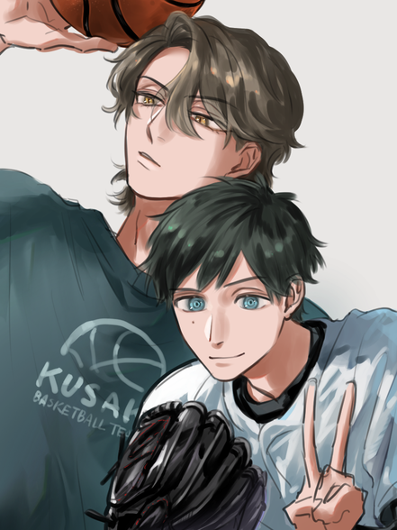
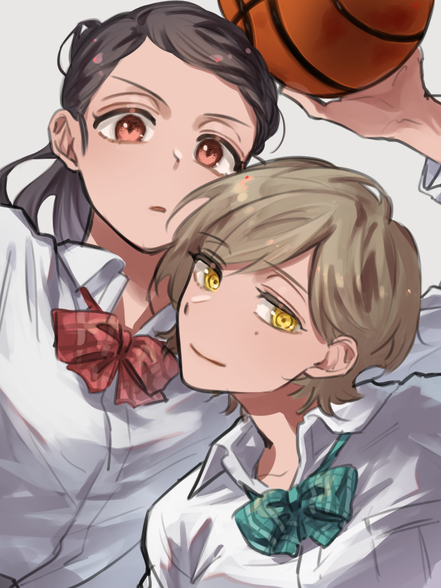

エース2人とキャプテン2人
うちの子のまとめサイトです！
エース組について

キャプテン組について

【創作概要】
日下学園高等部を舞台に、同学年の３人(エース組２人＋現キャプちゃん)と一歳年上の前キャプちゃんがわちゃわちゃしてる日常を見守る創作。４人が高2＋高3の時空でも、前キャプちゃんだけ大学生の時空でも、萌えれば何でもあり。
エース組
その他のイラスト/漫画はこちら
▶バスケ部エース（茶髪の方）と野球部エース（ぐるぐる目）の同室コンビ。
バスケ部くん
身長：201cm
特徴：縦長瞳孔（ヤマネコっぽい）
アメリカに住んでいたが、プレー中のケガをきっかけに療養を兼ねて日本へ（高2の三月）（日本にルーツを持っていたから）
転入したとき、ちょうど野球部くんが一人部屋を使っていたため、寮の同室となる。
わりと流暢な関西弁で喋る。
野球部くん
身長：187cm
特徴：ぐるぐる目（姉と同じ）／右頬にホクロ（姉と対称）
野球部のエースサウスポー。高3から主将を任され一人部屋をもらえることになったが、喜んだのも束の間、デカくてコワい留学生（？）が転がり込んできた。
- バスケ部くんはスペイン・デンマーク（母）とハーフ関西人（父）のクォーター。母親は5歳の頃他界しているが、父親の底無しの明るさによってまっすぐ育った。高校生ながらバスケ界隈ではそこそこ注目されているプレーヤーだが、ここ2年怪我が続いていて、更に本格的に療養を始めたため進路が注目されている。なお本人は全く気にしていない、前向き。（まだボール持つ腕ついとるし、走れるし、ヨユー）
- ちなみに怪我自体は大したことなくて療養の理由じゃない。実際の理由は、ここ2年の怪我の原因になっている視力問題（バスケ部くんは母親をとくした交通事故で眼底骨折して、その時の後遺症かもしれないとのこと）。
- 野球部くんはバスケ部くんが有名なプレーヤーであることを知らない。バスケ部くんもプレーヤーとしての野球部くんをあまり知らない。
- 野球部は強豪で、部員が70人いる。一方男子バスケ部は弱小（部員8名）なので、バスケ部くんが来たことに泣いて喜び頬をつねりあった。
- 野球部くんは甲子園終わってもプロ野球志望届は出さないつもり、大学からスカウトされなかったらそれで野球終わりにしようと思ってる(高校である程度やれてもプロになったら自分みたいなプレーヤーはごまんといる)。バスケ部くんはボールを持てる限り死ぬまでバスケし続けるつもり。
【小話】
-
バスケ部くんは寝起きが悪い≫続きを読む
キャプテン組
その他のイラスト/漫画はこちら
▶女子バスケ部前キャプテン（ぐるぐる目）と現キャプテン（黒髪）の先輩後輩コンビ。
前キャプちゃん
身長：168cm
特徴：にこにこぐるぐる目／左頬にホクロ（弟と対称）
強豪バスケ部のキャプテン。
自分で点を取るより、人を使ってゲームメイクする方が好き。
身長は低めだが、どんなにプレッシャーがかかる場面でもずっとにこにこ笑ってるので、ディフェンスのマッチ相手にめちゃくちゃ怯えられる。
コート上では正しく女王だけど、バスケ以外では意外と抜けてるところがある。
ポジションはPG。3年時の背番号は4。
現キャプちゃん
身長：179cm（高2時）→193cm（大学2年）
特徴：垂れ目吊り眉
同じく強豪バスケ部の次期キャプテン。
高校一年の冬既に企業から話が来ていたほどの天才肌&努力家。真面目で勤勉。バスケだけが取り柄だと思ってる。
オフェンスプレーが得意だけど、自分から前に出るのが苦手でディフェンスに回りがちだった(一年初期はポジション：センターだった)ところへ、前キャプちゃんがにこにこ笑顔で忍び寄り、無理やり引っ張り出し、名実ともにエースに仕立て上げた(それ以降はポジション：PF)。
気が強そうとよく言われるけど、本当は引っ込み思案なので、前キャプの真似をしてどうにかキャプテンを頑張っていく。
- 女バス前キャプも弟の野球部くんと同じように大学でバスケをやめるつもり。そのぶん後輩の現キャプには、もっと強くなれ、絶対にリーグプレーヤーになれという圧をもって接している。
- 次期主将に現キャプを指名したのは前キャプちゃん。この子の成長に1番必要なのはチーム内での立ち回り方/主将の経験だと思ったから。
- なお、大学でやめるつもりだということも、現キャプちゃんに向けてる期待も憧れも嫉妬も口にはしない(この子の行く先に幸あれ！)
- 怒りのようなマイナスな感情でしか距離を縮めるタイミングを作れない不器用なふたり。
- 前キャプちゃんは、コート上では大胆なプレーするし相手を揺さぶるトラッシュトークも上手いけど、自分に繋がる人間関係においては尽く臆病。
- キャプ組は高校生の時は不成立(他の寮生がいない時は一緒にお風呂入ったりするけど、その関係をはっきりした枠には嵌めない)。行動するのは現キャプから。高校卒業後、前キャプのいる大学に無理やり進学して、その下宿に無理やり上がり込む。≫「あの、大学卒業したらバスケやめるって聞いたんですけど」
-
バスケ部くんは寝起きが悪い寝起きが悪いバスケ部くん。元から強面ではあるけど、朝は特にやばい。修羅の顔をしている。野球部くんはいつまで経っても慣れないので、毎朝「3ヶ」となっている。あの巨体が修羅の顔引っ提げてゆら...ゆら...とベッドから這い出てきた朝には、遂に地獄の門を開けてしまったと思った。でも機嫌が悪いとかそういうことはないので、修羅の顔のまま「…はよ（朝出る1番大きな声）」と挨拶してくれる。頑張っている。続きを読む
-
互いに私が守らなきゃと思ってる【現キャプちゃん→前キャプちゃん】大雪の翌朝。近所の神社へ初詣に行くキャプ組。白いダウンに白いミトングローブ、白いニット帽を装備して玄関先で待ってる前キャプちゃん。鼻歌歌ってる（カリス〇ックス。ちょっと間違って覚えてる）。そこへ現キャプちゃんがリビングからスリッパぱたぱた言わせながらやって来る。手には白のふわふわマフラー…続きを読む
-
現キャプちゃんの髪型について大学生になったら髪型変わるよという話です。続きを読む
-
サイト作成！サイト作成した！続きを読む